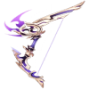
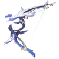

|  |
Agitação Trovejante |
45.94 |
608.07 |
Bonus CritDMG% |
14.4% |
66.15% |
Aumenta o Ataque em 20-40%, e concede a grandeza do Selo da Trovoada. Nas cargas 1/2/3, o Selo de Trovoada aumenta o Dano do Ataque Normal em 12-24/24-48/40-80%. O personagem obterá uma carga de Selo da Trovoada nos seguintes cenários: Ataque Normal que causa Dano (a carga dura 5s), lançar uma Habilidade Elemental (carga dura 10s); Energia Elemental menor que 100% (carga desaparece quando a energia está completa). A duração de cada carga é calculada independentemente uma da outra. |
|  |
Aqua Simulacra |
44.34 |
541.83 |
Bonus CritDMG% |
19.2% |
88.2% |
Aumenta a Vida em 16-32%. Se existirem inimigos próximos, o personagem que tem esta arma equipada terá um aumento de Dano de 20-40%, independentemente do personagem estar ativo no campo de batalha. |
|
Harpa Celestial |
47.54 |
674.33 |
Bonus CritRate% |
4.8% |
22.05% |
Aumenta o Dano Crítico em 20-40%. Ao acertar, possui 60-100% de chance de infligir um pequeno ataque AdE, causando 125% de Dano de ATQ Físico. Pode ser ativada uma vez a cada 4s. |